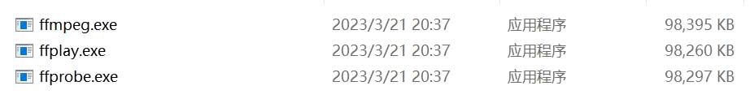

本次来分享一个处理音频的库 pydub，当然这个库本身无法操作音频，它只是对 ffmpeg 进行的一个封装。既然是封装，那就说明实际处理音频的还是 ffmpeg，所以 pip install pydub 之后，我们还要安装 ffmpeg，直接去官网下载即可。

然后将这些可执行文件所在的目录配置到环境变量中就可以了。
打开音频文件
音频有很多种格式，比如 wav、mp3、ogg 等等，只要是 ffmpeg 支持的文件格式都可以打开，而 ffmpeg 基本支持所有主流的音频格式。
from pydub import AudioSegment
# 打开 mp3 文件
AudioSegment.from_mp3("1.mp3")
# 打开 wav 文件
AudioSegment.from_wav("1.wav")
# 打开 ogg 文件
AudioSegment.from_ogg("1.ogg")
# 以上所有方法都调用了 from_file，等价于
AudioSegment.from_file("1.mp3", "mp3")
AudioSegment.from_file("1.wav", "wav")
AudioSegment.from_file("1.ogg", "ogg")
# 由于 mp3、wav、ogg 文件很常见，所以有单独的方法
# 但还有不常见的音频格式，比如苹果手机自带的录音软件导出的就是 m4a 格式
# 此时就只能使用 from_file 打开了
AudioSegment.from_file("1.m4a", "m4a")
注意：在读取文件的时候，格式一定要匹配，否则报错。举个例子：
from pydub import AudioSegment
try:
AudioSegment.from_wav("高梨康治 - 百鬼夜行.mp3")
except Exception as e:
print(e)
"""
Decoding failed. ffmpeg returned error code: 1
Output from ffmpeg/avlib:
b'...Invalid data found when processing input\r\n
"""
我们的音频是 mp3 格式的，但是却调用了 from_wav，所以会报错。当然也不要觉得将文件扩展名改成 wav 就万事大吉了，因为文件的类型取决于它存储的字节流，而不是扩展名。
from pydub import AudioSegment
song = AudioSegment.from_mp3("高梨康治 - 百鬼夜行.mp3")
print(song)
"""
<pydub.audio_segment.AudioSegment object at 0x0000021782910C40>
"""
返回的是一个 AudioSegment 对象，它就是音频读取之后的结果，通过该对象我们可以对音频进行各种操作，比如增加音量、淡入淡出等等。
并且这些操作都是链式的，每一个操作都会返回一个新的对象，不会修改原来的对象。所以我们在操作的时候，可以一直写下去，比如 song.xxx.xxx，不用每一次操作都重新赋值一个变量。
注意：pydub 做的任何操作，只要和时间相关，那么单位都是毫秒。
下面我们来看看它都支持哪些操作。
截取某一个片段
对音频进行切片，这是一个非常常用的操作，一个长音频，我们可能只要前 5 秒，或者后 5 秒等等。
# 截取前 5 秒
first_5_seconds = song[: 5 * 1000]
# 截取后 5 秒
last_5_seconds = song[-5000:]
返回的都是新的 AudioSegment 对象，保存之后正好是原始音频文件的前 5 秒和后 5 秒，关于保存文件后面会说。
音量增加和减小
我们可以让音量放大和缩小，并且实现起来也非常简单。
# 声音增大 9 分贝
first_5_seconds = first_5_seconds + 9
# 声音减小 7 分贝
last_5_seconds = last_5_seconds - 7
怎么样，是不是非常简单呢？
音频拼接
估计有人猜到做法了，没错，直接相加即可。
song_first_last = first_5_seconds + last_5_seconds
此时 song_first_last 就是由原始音频的前 5 秒放大 9 分贝，和原始音频的后 5 秒减小 7 分贝组合而成的新的音频（AudioSegment 对象）。
淡入淡出
song_first_last = first_5_seconds.append(last_5_seconds, crossfade=1500)
调用 append 也相当于将音频组合在一起，但是这种方式可以增加一些淡入淡出的效果。当然我们也可以手动实现：
song_first_last = first_5_seconds.fade_in(2000) + last_5_seconds.fade_out(3000)
前 5 秒和后 5 秒拼接起来得到 10 秒钟的音频，并且前 2 秒淡入，后 3 秒淡出。
重复
将一个片段重复 n 遍。
repeat_5 = song[: 3000] * 5
将前 3 秒重复了 5 遍，等于把 song[: 3000] 重复相加 5 次。
反转音频
说白了就是倒放。
song_reverse = song.reverse()
两个音频重叠播放
比如你有两个音频，一个是台词，一个是背景音乐，你需要将它们合并为一个音频。
from pydub import AudioSegment
song1 = AudioSegment.from_ogg("台词.ogg")
song2 = AudioSegment.from_ogg("背景音乐.ogg")
# 将 song1 和 song2 合并在一起
# 并且在 song1 的 5 秒后，开始播放 song2，position 默认为 0
song1.overlay(song2, position=5000)
声道分离
关于声道，我们一会儿解释。
from pydub import AudioSegment
song = AudioSegment.from_ogg("高梨康治 - 百鬼夜行.mp3")
# 声道的分离，得到两个不同声道对应的 AudioSegment 对象
left_channel, right_channel = song.split_to_mono()
获取音频的某一帧
song.get_frame(1) # 获取第一帧
获取音频属性
下面我们来获取音频的一些属性，不过在获取之前，先介绍一下音频属性的一些细节。
采样频率：又被称作取样频率，是单位时间内的采样次数，决定了数字化音频的质量。采样频率越高，数字化音频的质量越好，还原的波形越完整，播放的声音越真实，当然所占的大小也就越大。根据奎特采样定理，要从采样中完全恢复原始信号的波形，采样频率要高于声音中最高频率的两倍。人耳可听到的声音的频率范围是在 16 赫兹到 20 千赫兹之间，因此要将听到的原声音真实地还原出来，采样频率必须大于 40千赫兹。而 44千赫兹 的音频可以达到 CD 的音质，当然可以更高，只不过高于 48 千赫兹 的采样频率人耳很难分别，没有实际意义。
采样位数：也叫量化位数（单位：比特），是存储每个采样值所用的二进制位数，采样值反映了声音的波动状态，采样位数决定了量化精度。采样位数越长，量化的精度就越高，还原的波形曲线越真实，产生的量化噪音越小，回放的效果越真实。常用的量化位数有 4、8、12、16、24等等，量化位数与声卡的位数和编码有关。
声道数：使用的声音通道的个数，也是采样时所产生的声音波形个数。播放声音时，单声道的 wav 一般使用一个喇叭发声，立体声的 wav 可以使用两个喇叭发声。记录声音时，单声道每次产生一个波形的数据；双声道每次产生两个波形的数据，当然最终音频所占的存储空间也会增加一倍。
比特率：比特率是指每秒传送的比特（bit）数，单位为 bps（Bit Per Second），比特率越高，传送的数据越大。在音频、视频领域，比特率又被称为码率、位率、位速（这四个老铁是同一个东西，只是不同领域、不同翻译造就了这么多的名词）。比特率表示经过编码（压缩）后的音、视频数据每秒钟需要用多少个比特来表示。比特率与音、视频压缩的关系，简单来说就是比特率越高，音频、视频的质量就越好，但编码后的文件就越大；如果比特率越少则情况刚好相反，比特率 = 采样频率 * 采样位数 * 声道数。
from pydub import AudioSegment
song = AudioSegment.from_mp3("高梨康治 - 百鬼夜行.mp3")
# 声道数, 1 表示单声道, 2 表示双声道
print(song.channels) # 2
# 采样宽度, 采样位数除以 8 就是采样宽度了, 因为一个字节有 8 位
# 同理采样宽度乘以 8 就是采样位数，当前音频是 16 位的
print(song.sample_width) # 2
print(song.sample_width * 8) # 16
# 采样频率, 采样频率等于帧速率
print(song.frame_rate) # 44100
# 块对齐之后的大小, 或者一帧的字节数
# 等于 通道数 * 采样位数 / 8, 或者 通道数 * 采样宽度
print(song.frame_width) # 4
print(song.channels * song.sample_width) # 4
# 字节率, 等于 采样频率 * 声道数量 * 采样宽度(采样位数 / 8), 可以直接计算得到
print(song.frame_rate * song.channels * song.sample_width) # 176400
# 时长(单位秒)
print(song.duration_seconds) # 87.8225850340136
# 帧数目
print(song.frame_count()) # 3872976.0
# 原始的音频数据, 不打印了
song.raw_data
音频导出
我们对音频进行了一些操作之后，怎么保存到本地呢？这也是关键的一部分，不然你处理完了没有用啊。很简单，直接调用 AudioSegment 对象的 export 方法即可。
from pydub import AudioSegment
song = AudioSegment.from_mp3("高梨康治 - 百鬼夜行.mp3")
song.export("百鬼夜行.wav", "wav")
指定文件名和保存的类型即可，注意：第二个参数表示保存的音频的类型，必须要指定正确。如果不指定那么默认是 mp3，即便我们第一个参数的文件名结尾是 .wav，但是保存的时候仍是 mp3。
所以基于 pydub 可以很容易地实现音频格式转换。
修改属性
有时我们需要改变文件的格式，但有时也需要改变文件的属性。比如某个 MP3 文件的采样频率有点高，我们需要降低一些，或者双声道变成单声道等等，这个时候该怎么做呢？
from pydub import AudioSegment
song = AudioSegment.from_mp3("高梨康治 - 百鬼夜行.mp3")
print(song.channels) # 2
# 将通道设置为 1, 然后导出
song.set_channels(1).export("高梨康治 - 百鬼夜行_1.mp3", "mp3")
# 重新读取, 查看通道
print(
AudioSegment.from_mp3(r"高梨康治 - 百鬼夜行_1.mp3").channels
) # 1
1 表示单声道，2 表示双声道，从单声道转成双声道不会有任何的改变，但从双声道转成单声道可能会导致质量损失（当左右声道不同时）。
单声道：只用一条音频通道记录声音，是最古老、最基础的声音记录方式。单声道因为只有一条音频通道，所以我们的大脑接收的左右耳的信息没有差异，听觉系统就不会产生心理声学的定位，所以不会有宽度及深度的差异。只能感受到声音、音乐的前后位置及音色、音量的大小，而不能感受到声音从左到右等横向的移动。效果相对于真实的自然声来说，是简单化的，是失真了的。所以听出来的声音干涩，没有层次感，没有现场感，一般用来听新闻广播，因为单声道信号简单不易丢失。原理是把来自不同方位的音频信号混合后统一由录音器材把它记录下来，再由一只音箱进行重放。
双声道：人们听到声音时可以根据左耳和右耳对声音的相位差来判断声源的具体位置，在电路上它们往往各自传递的电信号是不一样的。相当于实现立体声的原理，在空间放置两个互成一定角度的扬声器，每个扬声器单独由一个声道提供信号。而每个声道的信号在录制的时候就经过了处理，有些音乐就跟气流一样，从左到右再从右到左，因为是两个不同的声道，当一个声道的响度比另一个声道大的时候，我们就感觉声音好像有了方向一样。双声道立体感强，有音场，多用于音乐、CD 等专辑。基本上音乐都是双声道，如果是单声道的音乐，只能说明音质非常非常差。
注意：设置的话不要通过下面这种方式来设置。
from pydub import AudioSegment
song = AudioSegment.from_mp3("高梨康治 - 百鬼夜行.mp3")
song.channels = 1
因为一个属性变了，可能会影响其它的属性，比如：帧大小，它等于 通道数 乘上 采样宽度（采样位数 / 8），如果通道变了，那么帧大小也会受到影响。所以我们应该通过 pydub 提供的 API 来设置，内部会自动帮我们处理。
from pydub import AudioSegment
song = AudioSegment.from_mp3("高梨康治 - 百鬼夜行.mp3")
print(song.frame_rate) # 44100
# 更改采样频率, 一般都是 44100, 我们可以修改为其它的值
# 注意: 并不是任意值都可以, 只能是 8000 12000 16000 24000 32000 44100 48000 之一
# 如果不是这些值当中的一个, 那么会当中选择与设置的值最接近的一个
# 比如我们设置 18000, 那么会自动变成 16000
song.set_frame_rate(18000).export("高梨康治 - 百鬼夜行_1.mp3", "mp3")
print(AudioSegment.from_mp3(r"高梨康治 - 百鬼夜行_1.mp3").frame_rate) # 16000
采样频率等于帧速率，以赫兹为单位。增大这个值通常不会导致质量的下降，但降低这个值一定会导致质量的下降，因为更高的帧速率意味着更大的频响特征（即可以表示更高的频率）。
除了通道数、采样频率之外，我们还可以设置采样宽度（采样位数除以 8），对于一个音频而言能设置这些属性已经足够了。像很多大厂提供的音频识别服务，也会对音频属性有严格的限制，而限制的属性也基本上就这些。无非是通道、采样频率、采样位数等等。
from pydub import AudioSegment
song = AudioSegment.from_mp3("高梨康治 - 百鬼夜行.mp3")
print(song.sample_width) # 2
song.set_sample_width(3).export("高梨康治 - 百鬼夜行_1.mp3", "mp3")
print(AudioSegment.from_mp3(r"高梨康治 - 百鬼夜行_1.mp3").sample_width) # 2
从打印的结果上来看，我们似乎没有设置成功，因为这和音频本身也是有相应关系的。可能音频本身的采样宽度就只能是 2，不过绝大部分音频的采样宽度都是 2，即采样位数为 16。
export 的其它参数
我们导出音频的时候使用的是 export 方法，这里面还可以接收其它参数，先来看看我们导出的音频的原始的音频之间的差异。
我们看到原始的音频有很多其它信息，比如作曲人、专辑等等，但是我们导出的没有，那么可不可以设置呢。答案是可以的，在导出的时候加上一个 tags 参数即可。
from pydub import AudioSegment
song = AudioSegment.from_mp3(r"高梨康治 - 百鬼夜行.mp3")
song.export("高梨康治 - 百鬼夜行_1.mp3", "mp3",
tags={"artist": "古明地觉", "album": "地灵殿专辑",
"title": "好听的百鬼夜行", "comments": "妈耶, 真好听"})
再来看看效果。
其它的属性可以单击右键，然后点击属性查看。对了还有图片，如果在导出的时候想要自定义封面的话，可以通过 cover 参数，传递一个图片文件地址即可。
另外，我们这里导出的文件要比原始文件小很多，原因在于比特率不一样。原始的音频的比特率是 320kbps，而我们导出的音频的比特率要小很多。因为比特率表示音频一秒所需的比特数，比特率越小，显然文件就越小。而我们在导出的时候也是可以修改比特率的：
song.export("高梨康治 - 百鬼夜行_1.mp3", "mp3", bitrate="320k")
以上就是 pydub 对音频的一些常见操作，总的来说支持的功能还是比较多的。如果你对音视频处理感兴趣，可以在这一领域深耕下去，因为涉足该领域的人确实不多。